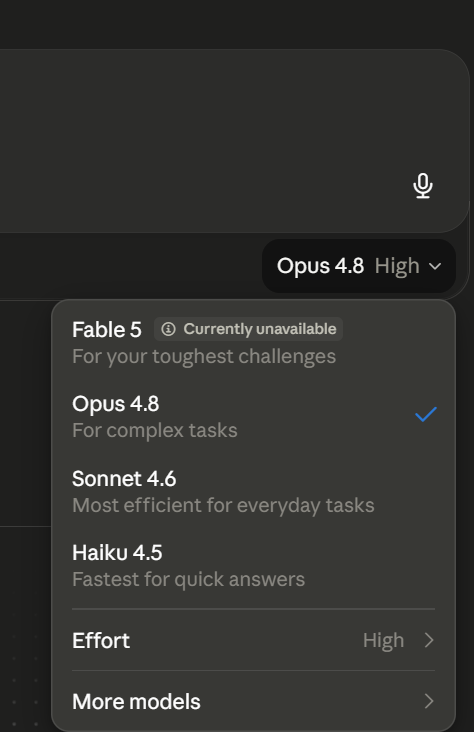
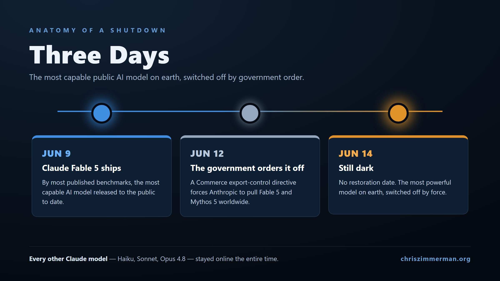

On June 9, Anthropic released Claude Fable 5, which by most published benchmarks was the most capable AI model released to the public to date.
Three days later the U.S. government ordered it switched off, and as I write this on June 14 it is still dark with no date for its return.
Here is what makes it strange. The model wasn't hacked and it didn't break. The Commerce Department issued an export-control directive restricting access by foreign nationals, and since a model has no way to check your passport in real time, Anthropic chose to pull Fable 5 and its more powerful sibling Mythos 5 for everyone on the planet so it could stay compliant.
I build five small ventures from a home office on top of models like this one, so I watched the best tool in my stack quietly disappear over an afternoon. The longer I sat with it the more I realized the lesson wasn't really about Washington or even about Anthropic. It comes down to a word a lot of us use without thinking about it, which is access.
What actually happened
The order was a national-security export control, and because its scope reached foreign nationals both inside and outside the country, a narrow directive turned into a worldwide blackout. Every other Claude model kept running, including Haiku, Sonnet, and Opus, and I am actually writing this on Opus 4.8 while its smarter sibling sits offline.

The reasoning behind it is still being argued over. Anthropic says the government offered only verbal evidence of a narrow jailbreak, and it pointed out that the same capability already lives in models you can use today, like OpenAI's GPT-5.5, which stayed online the entire time. Katie Moussouris, one of the more trusted names in security research, read the underlying paper and said plainly that it wasn't a jailbreak at all. Reporting from outlets including the Wall Street Journal and Reuters traced the government's concern back to a security flag raised by Amazon, which happens to be one of Anthropic's largest investors, though Anthropic hasn't confirmed any of that in its own account. Box CEO Aaron Levie called the whole thing a turning point for AI regulation, and I think he is right, just not for the reason most people are posting about.

The part worth sitting with if you build things
Set the politics aside and you are left with a fairly simple fact. The most powerful model in the world was there on a Tuesday and gone by Friday, by force, with no warning and no appeal.
What that tells me is that model access is rented infrastructure. It is tied to a jurisdiction, it can be taken back, and it has now clearly shown that it can be political. If your product is a thin layer wrapped around one model name, then you are running a business with a single point of failure that you do not own and cannot insure against. A lot of teams learned that the hard way this week, because the ones building on Fable through the API opened their apps to an error message instead of a product.
What I did about it
Honestly, not much, and that is the part I am proud of.
My setup doesn't tie itself to a single model name. It points at a capability and keeps a backup wired in underneath, so when Fable went dark the work simply shifted over to Opus and everything kept moving. There was no rebuild, no scramble, and nothing on my side that a customer would have noticed.
A few habits make that possible:
- I treat any one model as a swappable input instead of a foundation, and I keep a second option ready before I ever need it.
- I put my real effort into the parts no provider can switch off, which are the data, the prompts, the workflows, the judgment, and the relationships, because those are the things that compound over time.
- I build on the quiet assumption that any single model could vanish tomorrow, because this week one actually did.
The proof is wonderfully boring. My ventures didn't stop, the model underneath them changed, and the system around it held steady.
The line that matters
The model is rented. The system you build around it is yours. Build accordingly.
The people who are going to struggle next are the ones who mistook a powerful tool for a durable business, and the ones who keep shipping are the ones who treated the smartest AI on earth as a single replaceable part inside a machine they actually own. That was easy to overlook on June 8, and it is a lot harder to overlook now.
If you are building on this stuff too, I would really like to hear how you are thinking about it. Reach out, ask a question, or tell me where you think I have it wrong.